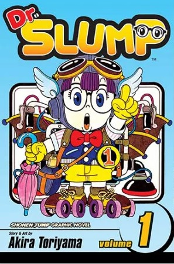
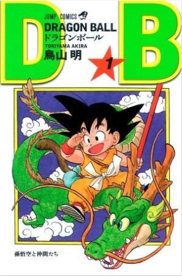
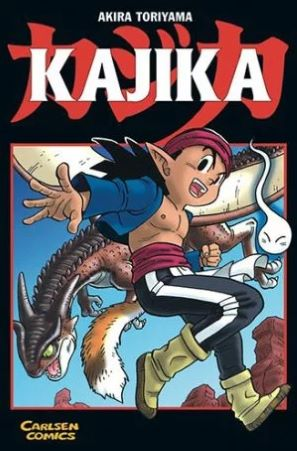
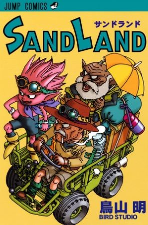

MANGAS

Dr Slump

Dragon Ball
1984-1995
Es un manga escrito e ilustrado por Akira Toriyama, con un total de 519 capítulos impresos.

Kajika
1998
Es un manga de Akira Toriyama que fue publicado en la revista Shōnen Jump entre la edición 32 y 44 del año 1998 y compilada en un único volumen.

Sand Land
2000
Es un manga corto de catorce capítulos escrito y dibujado por Akira Toriyama, fue publicado en la revista Weekly Shonen Jump desde junio hasta septiembre del año 2000.